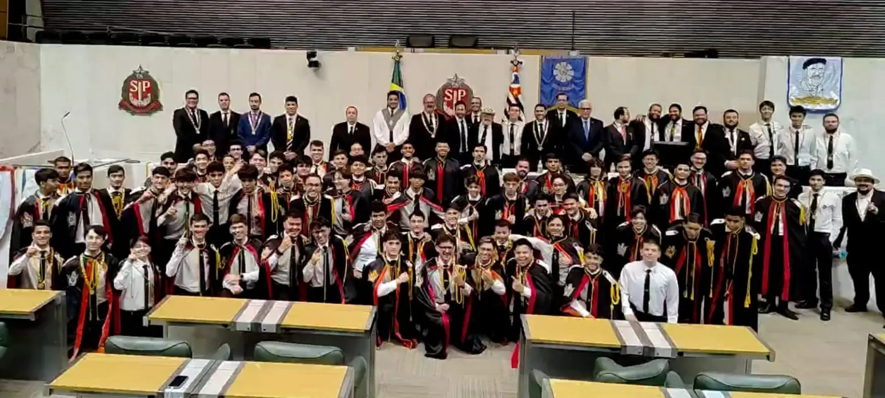
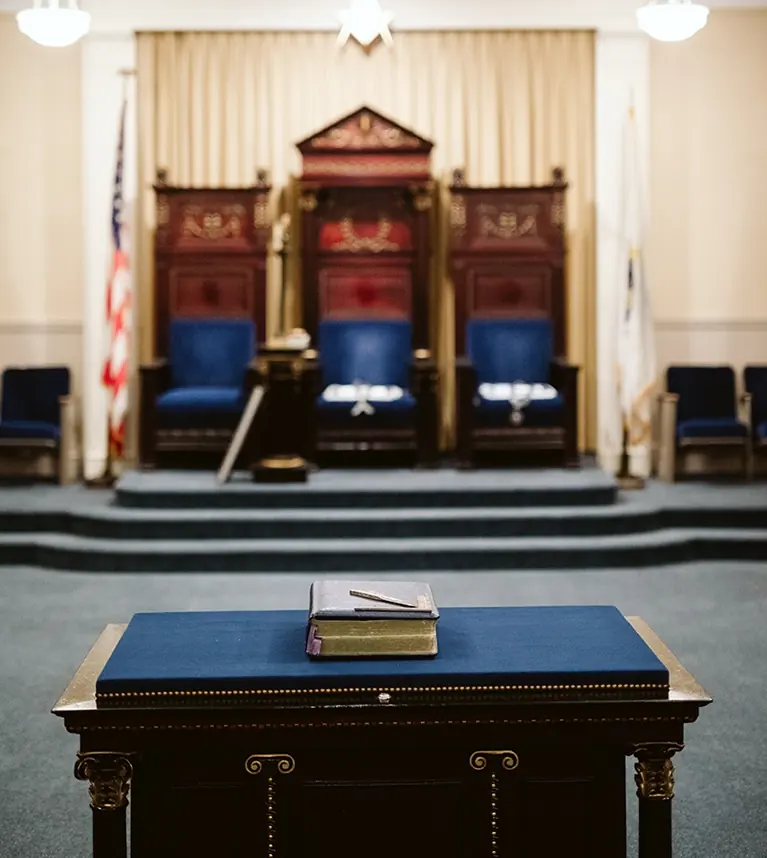
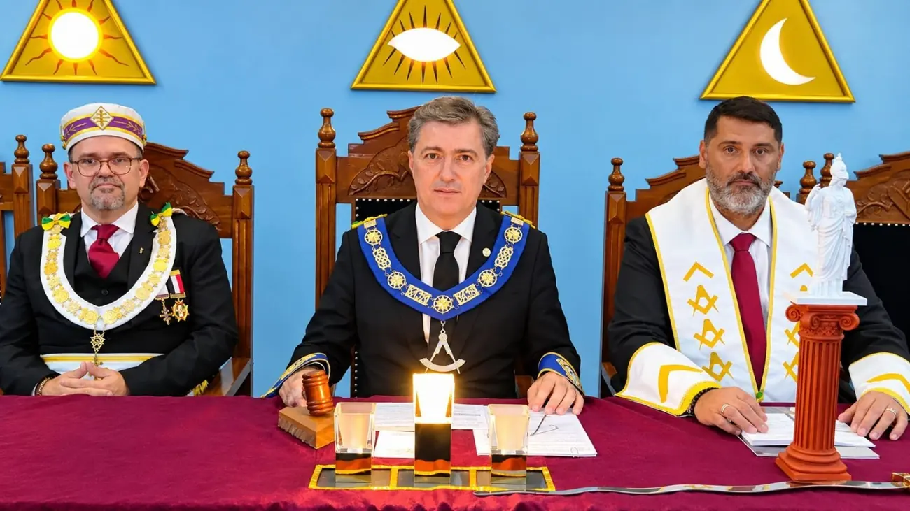
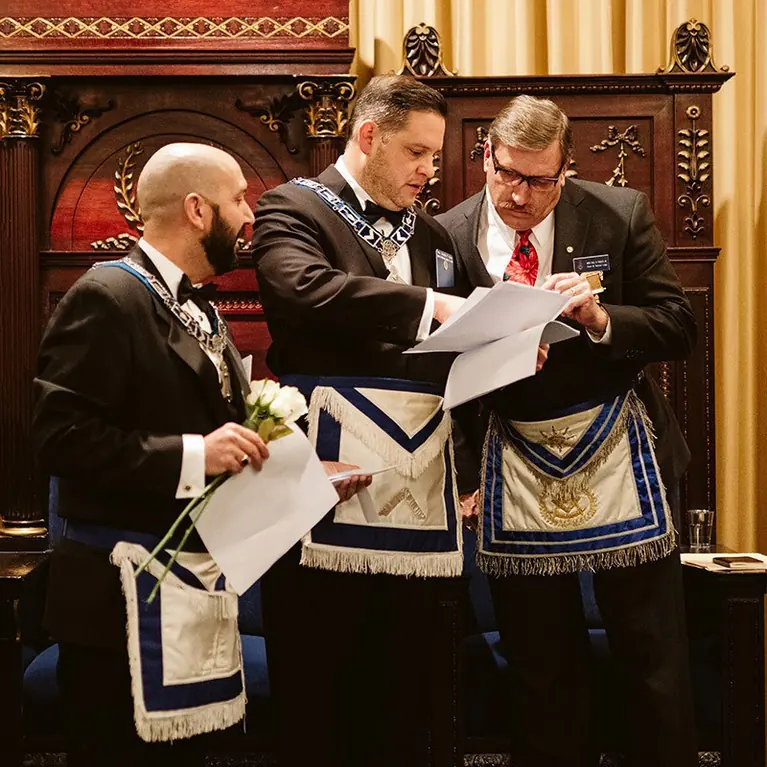
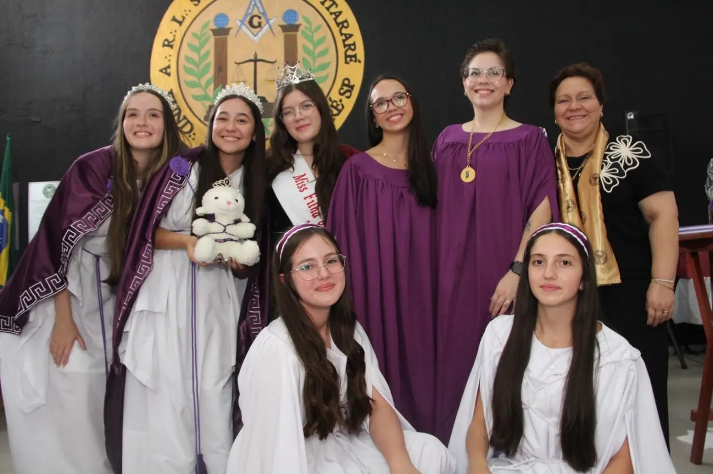
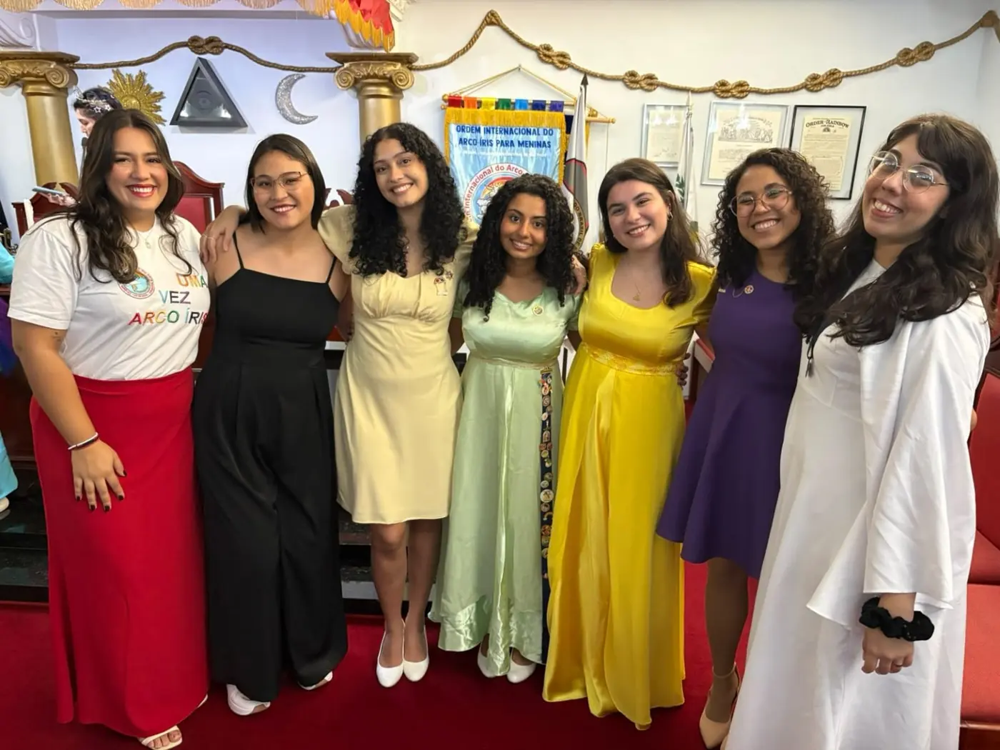
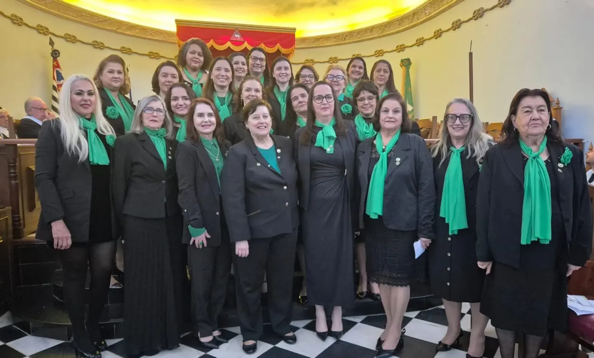
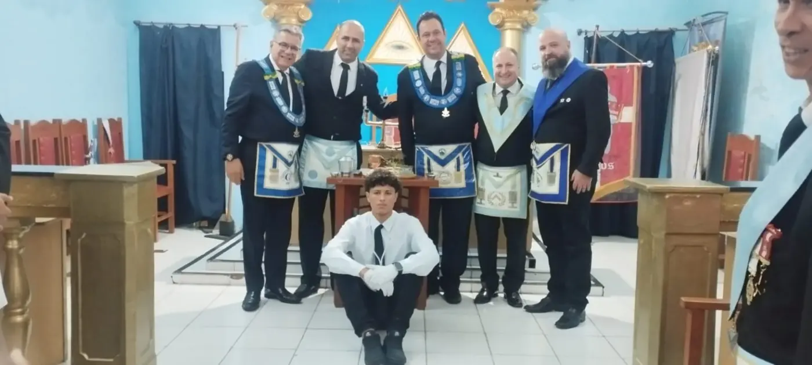
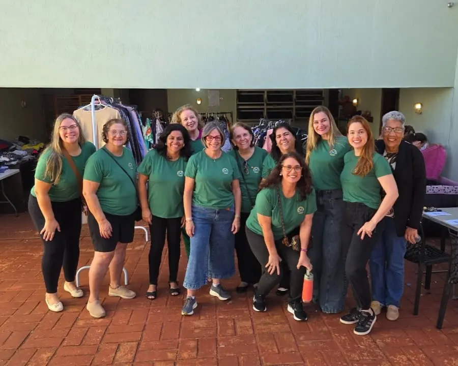

Ages 12 to 21
Order of DeMolay
Founded in 1919, it develops young men in leadership, civic spirit and service, based on seven cardinal virtues.

An initiatic, philosophical, philanthropic and educational institution that brings together free men of good repute in pursuit of moral improvement and the common good.
A Mason works on his own character as a stonemason works on stone: with patience, method and the right tools.
Freemasonry offers a path of self-knowledge based on symbols, allegories and fraternal fellowship. In Lodge, men of different professions, ages and beliefs meet on equal footing to study, reflect and act for the good of society.
Its fundamental principles are belief in a Creative Principle, called the Great Architect of the Universe, respect for the laws of the land, tolerance, freedom of conscience and the practice of charity.


More than three centuries of modern Freemasonry, with roots in the medieval craft guilds.
Heritage and memoryGuilds of stonemasons who built cathedrals organized themselves into lodges, with their own rules, degrees of learning and signs of recognition.
Four London Lodges found the first Grand Lodge, the landmark of modern, speculative and philosophical Freemasonry.
Masonic ideas reach Brazil with students and travelers, amid the independence movements.
Founding of the Grande Oriente do Brasil, the first national Masonic Grand body. Freemason's Day is celebrated in the country on August 20.
Lodges across the whole country, working in education, culture, philanthropy and the formation of young people.
Each degree corresponds to a stage of learning, with its own symbols, duties and reflections.
The beginning of the journey. The Apprentice works the rough stone, learns silence, listening and the moral and symbolic foundations of the Order.
The stage of study and knowledge. The Fellowcraft delves into the liberal arts, science and the understanding of the world.
Masonic maturity. The Master reflects on fidelity, mortality and the responsibility of passing on what he has learned.

Founded in 1919, it develops young men in leadership, civic spirit and service, based on seven cardinal virtues.

Created in 1920, it brings together girls with a Masonic relationship around character, reverence and charity.

Since 1922, it has developed friendship, leadership and service through teachings tied to the colors of the rainbow.

Wives, mothers, daughters and sisters of Masons devoted to philanthropy, culture and fraternal fellowship.

Sons of Masons symbolically adopted by the Lodge, which commits to supporting them as they grow.

Family members who take part in campaigns and events and bring the social side of Freemasonry to life.
Straight answers to the most common questions from people getting to know the institution.
Send another questionNo. Freemasonry requires its members to believe in a Creative Principle, but it has no dogmas, sacraments or theology of its own. Men of different religions meet together in Lodge, and religious and party-political discussions are avoided in sessions.
It is a discreet society. Its Lodges have known addresses, its statutes are registered and its social work is public. Only the modes of recognition and certain aspects of the ritual are kept private, preserved by tradition.
In traditional regular Freemasonry, Lodges are for men. Women of the Masonic family take part in the Women's Fraternities, and girls and young women can join Job's Daughters and the Order of the Rainbow. There are also mixed and women's obediences, with their own recognition.
Traditionally, a candidate is proposed by a Mason who knows him. Anyone who does not know a Mason can express interest through this portal, and an authorized representative will make the first contact.
There is an initiation fee and monthly dues set by each Lodge, which cover the upkeep of the temple and its activities. The amounts are shared with the candidate during the process, before any commitment.
Lodges generally meet once a week or every two weeks, in sessions of about two hours. Study, events and social work round out Masonic life, according to each member's availability.